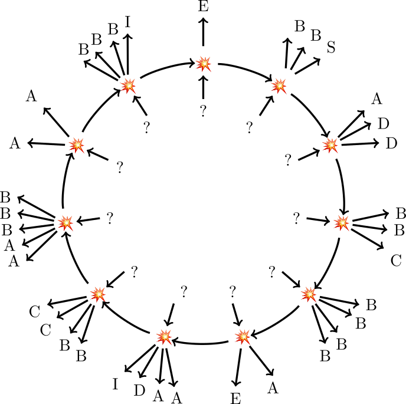
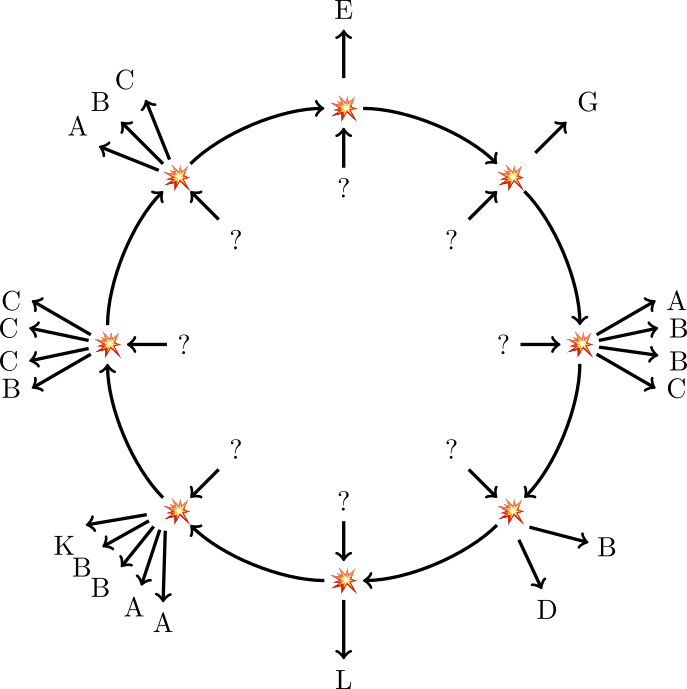
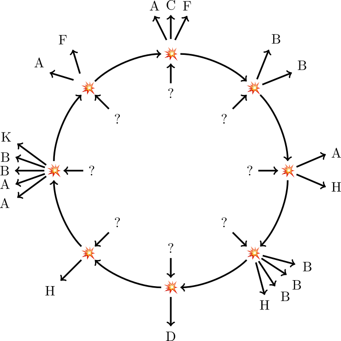

The researchers in Howtoona have discovered a new series of primary particles - the basic building blocks of natural things - in their experiments.
As of now, they are colliding these particles inside this accelerator as part of a new experiment. Looking at their observation logs, what kind of particular discovery are the researchers hoping to find?
Known results of particle collisions:
| A | B | C | D | E | F | G | H | I | J | K | |
|---|---|---|---|---|---|---|---|---|---|---|---|
| A | A | BB | AAC | ABBB | DE | BBBC | ACG | AABBD | BBBBC | AAAAJ | |
| B | D | ABB | AAF | BCC | DH | AAABD | ACCC | FK | ABDE | ||
| C | E | BBC | AAG | ABBD | DI | BBBBB | AABBE | CDF | |||
| D | AG | BH | CI | ABCC | AAAJ | CDE | AABL | ||||
| E | I | BBBB | AAJ | ABBE | BBBF | ACM | |||||
| F | AJ | BK | CCD | AAAM | BBN | ||||||
| G | CD | BBF | ABBBC | DO | |||||||
| H | AM | CO | ABDD | ||||||||
| I | BBG | AAP | |||||||||
| J | Q | ||||||||||
| K |
<

| ? | ? | ? | ? | ? | ? | ? | ? | ? | ? | ? | ||||||||||||
| ↓ | ↓ | ↓ | ↓ | ↓ | ↓ | ↓ | ↓ | ↓ | ↓ | ↓ | ||||||||||||
| → | 💥 | → | 💥 | → | 💥 | → | 💥 | → | 💥 | → | 💥 | → | 💥 | → | 💥 | → | 💥 | → | 💥 | → | 💥 | → |
| ↓ | ↓↓↓ | ↓↓↓ | ↓↓↓ | ↓↓↓↓ | ↓↓ | ↓ | ↓↓↓↓ | ↓↓↓↓↓ | ↓↓ | ↓↓↓↓ | ||||||||||||
| E | BBS | ADD | BBC | BBBB | AE | AADI | BBCC | AABBB | AA | BBBI |

| ? | ? | ? | ? | ? | ? | ? | ? | |||||||||
| ↓ | ↓ | ↓ | ↓ | ↓ | ↓ | ↓ | ↓ | |||||||||
| → | 💥 | → | 💥 | → | 💥 | → | 💥 | → | 💥 | → | 💥 | → | 💥 | → | 💥 | → |
| ↓ | ↓ | ↓↓↓↓ | ↓↓ | ↓ | ↓↓↓↓↓ | ↓↓↓↓ | ↓↓↓ | |||||||||
| E | G | ABBC | BD | L | AABBK | BCCC | ABC |

| ? | ? | ? | ? | ? | ? | ? | ? | |||||||||
| ↓ | ↓ | ↓ | ↓ | ↓ | ↓ | ↓ | ↓ | |||||||||
| → | 💥 | → | 💥 | → | 💥 | → | 💥 | → | 💥 | → | 💥 | → | 💥 | → | 💥 | → |
| ↓↓↓ | ↓↓ | ↓↓ | ↓↓↓↓ | ↓ | ↓ | ↓↓↓↓↓ | ↓↓ | |||||||||
| ACF | BB | AH | BBBH | D | H | AABBK | AF |